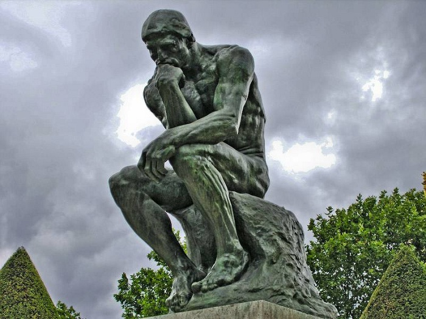

Hyve on tietoa. Sokrates
Ihminen on kaikkien asioiden mitta. Protagoras
Aika on liikkuva kuva ikuisuudesta. Platon Musiikki on maailmankaikkeuden sielu. Pythagoras
Oikeudenmukaisuus on hyve.
Tieto on voimaa.
Kaikki virtaa, kaikki muuttuu.
Mitä vähemmän sanoja,
sitä paremmin sanottu.
Cicero
Kaiken mitta on ihminen. Protagoras
Olla on olla havaittavissa. Parmenides
Järki on tiedon tärkein lähde. Aristoteles
Rakasta totuutta, mutta anna anteeksi virhe. Voltaire
Työ voittaa kaiken. Hesiodos
Kohtuullisuus on parasta kaikessa. Kleobulos
Vain hyve tekee ihmisen onnelliseksi. Seneca Meistä tulee sitä, mitä teemme. Aristoteles Mielihyvä on onnellisen elämän alku ja loppu. EpikurosKaikki ihmiset pyrkivät luonnostaan tietoon. Aristoteles
Totuus ei pelkää tutkimista. Terentius
Viisaus on tietää,
mitä ei tiedä. Kungfutse
Here is a quote from WWF's website:
For 60 years, WWF has worked to help people and nature thrive. As the world's leading conservation organization, WWF works in nearly 100 countries. At every level, we collaborate with people around the world to develop and deliver innovative solutions that protect communities, wildlife, and the places in which they live.
WWF's goal is to: Build a future where people live in harmony with nature.
The WHO was founded in 1948.
Written by philosophers.Suuret Filosofien Sitaatit according information from Internet.
Suuret Filosofien SitaatitThis property specifies what kind of border to display:
A dotted border.
A dashed border.
A solid border.
A double border.
A groove border.
A ridge border.
An inset border.
An outset border.
No border.
A hidden border.
A mixed border.